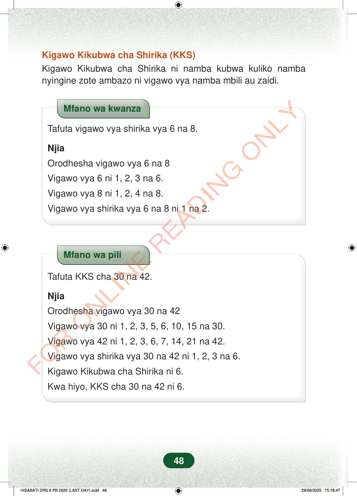

Kigawo Kikubwa cha Shirika (KKS)Kigawo Kikubwa cha Shirika ni namba kubwa kuliko nambanyingine zote ambazo ni vigawo vya namba mbili au zaidi.Mfano wa kwanzaTafuta vigawo vya shirika vya 6 na 8.NjiaOrodhesha vigawo vya 6 na 8Vigawo vya 6 ni 1, 2, 3 na 6.Vigawo vya 8 ni 1, 2, 4 na 8.Vigawo vya shirika vya 6 na 8 ni 1 na 2.Mfano wa piliTafuta KKS cha 30 na 42.NjiaOrodhesha vigawo vya 30 na 42Vigawo vya 30 ni 1, 2, 3, 5, 6, 10, 15 na 30.Vigawo vya 42 ni 1, 2, 3, 6, 7, 14, 21 na 42.Vigawo vya shirika vya 30 na 42 ni 1, 2, 3 na 6.Kigawo Kikubwa cha Shirika ni 6.Kwa hiyo, KKS cha 30 na 42 ni 6.48
Kigawo Kikubwa cha Shirika (KKS) Kigawo Kikubwa cha Shirika ni namba kubwa kuliko namba nyingine zote ambazo ni vigawo vya namba mbili au zaidi.
Mfano wa kwanza
Tafuta vigawo vya shirika vya 6 na 8.
Njia
Orodhesha vigawo vya 6 na 8
Vigawo vya 6 ni 1, 2, 3 na 6.
Vigawo vya 8 ni 1, 2, 4 na 8.
Vigawo vya shirika vya 6 na 8 ni 1 na 2.
Mfano wa pili
Tafuta KKS cha 30 na 42.
Njia
Orodhesha vigawo vya 30 na 42
Vigawo vya 30 ni 1, 2, 3, 5, 6, 10, 15 na 30.
Vigawo vya 42 ni 1, 2, 3, 6, 7, 14, 21 na 42.
Vigawo vya shirika vya 30 na 42 ni 1, 2, 3 na 6.
Kigawo Kikubwa cha Shirika ni 6.
Kwa hiyo, KKS cha 30 na 42 ni 6.
48
Kigawo Kikubwa cha Shirika (KKS)Kigawo Kikubwa cha Shirika ni namba kubwa kuliko namba nyingine zote ambazo ni vigawo vya namba mbili au zaidi.Mfano wa kwanza unaonyesha vigawo vya 6 ni 1, 2, 3 na 6, na vigawo vya 8 ni 1, 2, 4 na 8. Vigawo vya shirika vya 6 na 8 ni 1 na 2.Mfano wa kwanzaMfano wa pili unaonyesha KKS cha 30 na 42. Vigawo vya shirika ni 1, 2, 3 na 6, hivyo KKS ni 6.Mfano wa pili